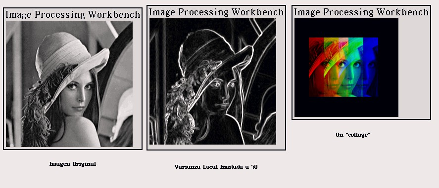

PhotoSqueak
1.0
PhotoSqueak
1.0
by Juan Manuel Vuletich
Back to Juan's studio
Vea la Versión en Español
Introduction
This is my lab work for the course on Image Processing
I took the first semester of 2000 at the Faculty of Sciences of the University
of Buenos Aires (Argentina). I made it in Squeak (http://www.squeak.org),
a modern and free Smalltalk-80 version.
Some noteworthy aspects include:
-
Implementation of an important set of Image Processing algorithms and techniques
-
Use of the C code generation in Squeak for high performance numerical algorithms,
with full Smalltalk code too.
-
Morphic user interface.
All the names (of classes, variables and methods), comments,
and the user interface are in English. The texts in these pages are extracts
if the reports included with the Lab Projects.
I included the English translation of the titles on the images, as follows:
-
Imagen Original = Original Image
-
Varianza Local limitada a 50 = Local variance, limited to 50
-
Un "collage" = A "collage"
